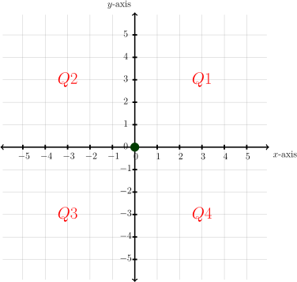
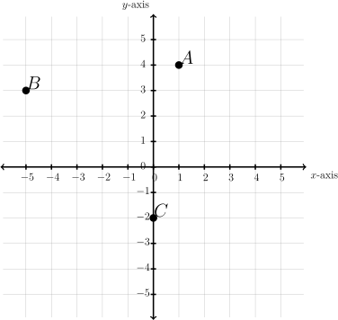
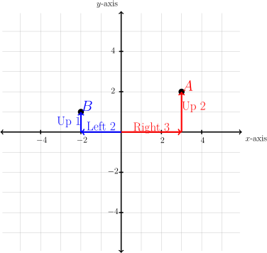
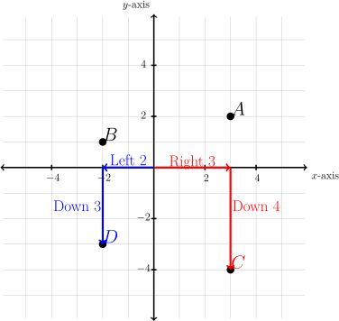
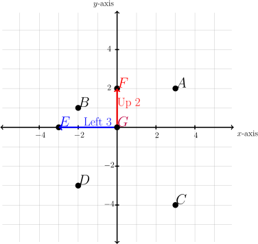
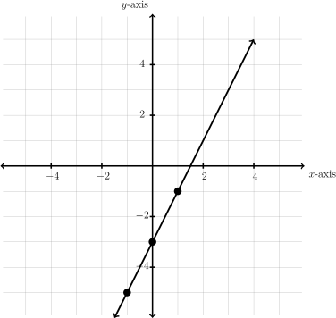
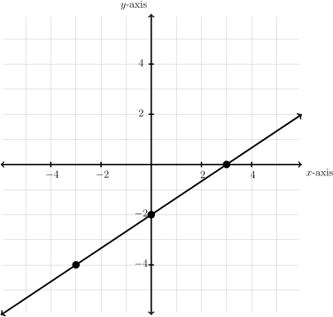
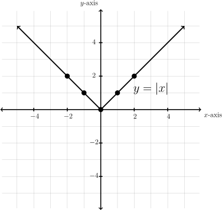

Subsection3.A.1The Cartesian Coordinate Plane
To get an idea of the behavior of an equation we can make a picture that represents its solutions. A graph is simply a picture of the solutions to an equation. To graph an equation we use a Cartesian coordinate plane (named in honor of the 17th century philosopher, mathematician and scientist, René Descartes).
The plane is divided into four regions, called quadrants, by a horizontal number line (labelled the \(x\)-axis on the graph below) and a vertical number line (labelled the \(y\)-axis).

The quadrants are labeled \(Q1\text{,}\) \(Q2\text{,}\) \(Q3\text{,}\) and \(Q4\) and proceed counterclockwise around the plane as shown in the graph at the left.
Where the two lines meet in the center is called the origin, marked by the green point. This center origin is where \(x = 0\) and \(y = 0\text{.}\)
Positive numbers appear to the right of the origin on the \(x\)-axis and negative numbers to the left. Similarly, positive numbers appear above the origin on the \(y\)-axis, and negative numbers below. We can put dots on the graph to indicate points. Each point has an "address" that defines its location. The address is given as an ordered pair \((x,y).\) The first number will be the value on the \(x\)-axis or horizontal number line. This is the distance from the point to the origin in the horizontal direction. The second number will represent the distance from the point to the origin in the vertical direction.
Example3.A.1Identify Quadrants and Coordinates
Give the quadrant and coordinates of each point.

The point \(A\) is in \(Q1\) and point \(B\) is in \(Q2\text{.}\) Point \(C\) is not in a quadrant but is on the \(y\)-axis.
Tracing from the origin, point \(A\) is right \(1\text{,}\) up \(4\text{.}\) This becomes \(A(1, 4)\text{.}\) Point \(B\) is left \(5\text{,}\) up \(3\text{.}\) Left is backwards or negative so we have \(B( - 5, 3)\text{.}\) \(C\) is straight down 2 units. There is no left or right. This means we go right zero so the point is \(C(0,-2)\text{.}\)
\(A(1,4)\) is in \(Q1\text{,}\) \(B(-5,3)\) is in \(Q2\text{,}\) and \(C(0,-2)\) is on the \(y\)-axis. \(\checkmark\)
WeBWorK: Entering Points
Points in the plane are entered as (#,#)= (horizontal #, vertical #).
Just as we can give the coordinates for a set of points, we can take a set of points and plot them on the plane.
Example3.A.2Graph Points
Graph the points
\(A(3, 2), B( - 2, 1), C(3, - 4), D( - 2, - 3), E( - 3, 0), F (0, 2), G(0, 0)\)

The first point, \(A\) is at \((3, 2)\text{.}\) This means \(x=3\)(right 3) and \(y =2\)(up 2). Following these instructions, starting from the origin, we get our point. Note that \(A\) is in Q1.
The second point, \(B( - 2, 1)\text{,}\) is left 2 (negative moves backwards), up 1. This is also illustrated on the graph. Note that \(B\) is in Q2.

The third point, \(C(3,-4)\) is right 3, down 4 (negative moves backwards). Note that \(C\) is in Q4.
The fourth point, \(D(-2,-3)\) is left 2, down 3 (both negative, both move backwards). Note that \(D\) is in Q3.
The last three points have zeros in them. We still treat these points just like the other points. If there is a zero there is just no movement.

Next is \(E(-3, 0)\text{.}\) This is left 3 (negative is backwards), and up zero, right on the \(x\)-axis. Note that \(E\) is on the \(x\)-axis.
Then is \(F(0, 2)\text{.}\) This is right zero, and up two, directly on the \(y\)-axis. Note that \(F\) on the \(y\)-axis.
Finally is \(G(0, 0)\text{.}\) This point has no movement. Thus the point is the origin.
Our Solution \(\checkmark\)
We will use graphs to give a picture of the solutions to an equation. To determine whether or not a point \((x,y)\) is a solution to a given equation, you substitute (or "plug in") the values into their corresponding variables in the equation and check to see that you get a true statement (both sides of the equation have equal values).
Example3.A.3Investigate Solution
Determine if the point \((1,-1)\) is a solution to the equation \(y = 2x - 3\text{.}\)
\begin{align*}
y\amp=2x-3\amp\amp\text{Since \((1,-1)=(x,y)\)}\\
\amp\amp\amp\text{substitute \(x=1\) and \(y=-1\) in the equation.}\\
-1\amp=2(1)-3\amp\amp\text{Simplify}\\
-1\amp =-1\amp\amp\text{A true statement}
\end{align*}
The point \((1,-1)\) is a solution.\(\checkmark\)
Example3.A.4Investigate Solution
Determine if the point \((-9,7)\) is a solution to the equation \(y = \lvert x+5\rvert+4\text{.}\)
\begin{align*}
y\amp = \lvert x+5\rvert +4\amp\amp\text{Substitute \(x=-9\) and \(y=7\)}\\
\amp\amp\amp\text{in the equation.}\\
7 \amp = \lvert -9+5\rvert +4\amp\amp\text{Simplify: Inside absolute value first}\\
7\amp = \lvert -4\rvert +4\amp\amp\lvert -4\rvert =4\\
7\amp =8\amp\amp\text{NOT a true statement: \(7\) does not equal \(8\)}
\end{align*}
No, the point \((-9,7)\) is not a solution. \(\checkmark\)
Equations do not always use the varibles \(x\) and \(y\text{,}\) but as long as we know which represents the horizontal distance and which the vertical, we may plot a graph to represent the equation.
Example3.A.5Equation Table with Variables Not \(x\) nor \(y\)
For the equation \(Q = P^2-3\text{,}\) find the \(Q\)-coordinate for each value of \(P\) in the table. Since \(Q\) is written in terms of \(P\text{,}\) we will take \(P\) as the horizontal variable and \(Q\) for the vertical.
| \(P\) |
\(Q\) |
| \(-3\) |
|
| \(-1\) |
|
| \(0\) |
|
| \(1\) |
|
| \(5\) |
|
We will plug each given \(P\) value in the equation and solve for \(Q\)
| \(P\) |
\(Q\) |
| \(-3\) |
\(6\) |
| \(-1\) |
\(-2\) |
| \(0\) |
\(-3\) |
| \(1\) |
\(-2\) |
| \(5\) |
\(22\) |
Find each \(Q\)-coordinate by replacing \(P\) with the given value in the equation: \(Q = P^2-3\)
\(P=-3\mapsto Q =(-3)^2-3=9-3=6\) \(P=-1\mapsto Q =(-1)^2-3=1-3=-2\) \(P=0\mapsto Q =(0)^2-3=0-3=-3\) \(P=1\mapsto Q =(1)^2-3=1-3=-2\) \(P=5\mapsto Q =(5)^2-3=25-3=22\checkmark\)
We can visualize the solutions of an equation by making a graph of possible \(x\) and \(y\) combinations that make the equation true. We will have to start by finding such \(x\) and \(y\) combinations and recording them in a table of values.
Example3.A.6Graph a Given Equation
Graph \(y=2x-3\text{.}\) We make a table of values.
| \(x\) |
\(y\) |
| \(-1\) |
|
| \(0\) |
|
| \(1\) |
|
We will test three values for \(x\text{.}\) We chose three integers easy to work, but any three values can be used.
| \(x\) |
\(y\) |
| \(-1\) |
\(-5\) |
| \(0\) |
\(-3\) |
| \(1\) |
\(-1\) |
We find the \(y\)-value for each \(x\)-value:
\(x=-1\mapsto y =2(-1)-3=-2-3=-5\) \(x=0\mapsto y =2(0)-3=0-3=-3\) \(x=1\mapsto y =2(1)-3=2-3=-1\)
Our table shows the points: \((-1,-5), (0,-3), (1,-1)\)

We plot each point.
In Section 3.B, we will see thatall solutionjs of this particular equation lie on a line. Thus, once the points are plotted on the graph, we connect the dots to make a line.
The graph is Our Solution.\(\checkmark\)
Any point on the line is a solution of the equation \(y = 2x -3\text{.}\) For example, notice the graph goes through the point \((2, 1)\text{.}\) If we use \(x=2\text{,}\) we should get \(y =1\text{.}\) Sure enough, \(y =2(2)-3=4-3=1\text{,}\) just as the graph suggests.
Example3.A.7Graph a Given Equation
Graph \(2x-3y=6\text{.}\) We make a table of values.
| \(x\) |
\(y\) |
| \(-3\) |
|
| \(0\) |
|
| \(3\) |
|
We will test three values for \(x\text{.}\) WE chose three integers easy to work with, but any three values can be used.
| \(2x-3y=6\) |
Substitute each value for \(x\) and solve for \(y\) |
| \(2(-3)-3y=6\) |
Start with \(x=-3\text{,}\) multiply first |
| \(-6-3y=6\) |
Add 6 to both sides |
| \(\underline{+6\hphantom{12345}+6}\) |
|
| \(-3y=12\) |
Divide both sides by \(-3\) |
| \(\overline{-3}\hphantom{123}\overline{-3}\) |
|
| \(y=-4\) |
Solution for \(y\) when \(x=-3\text{,}\) add this to table |
| \(2x-3y=6\) |
Next substitute \(x=0\) |
| \(2(0)-3y=6\) |
Multiplying clears the constant term |
| \(-3y=6\) |
Divide both sides by \(-3\) |
| \(\overline{-3}\hphantom{12}\overline{-3}\) |
|
| \(y=-2\) |
Solution for \(y\) when \(x=0\text{,}\) add this to table |
| \(2x-3y=6\) |
Next substitute \(x=3\) |
| \(2(3)-3y=6\) |
Multiplying clears the constant term |
| \(6-3y=6\) |
Subtract 6 from both sides |
| \(\underline{-6\hphantom{12345}-6}\) |
|
| \(-3y=0\) |
Divide both sides by \(-3\) |
| \(\overline{-3}\hphantom{12}\overline{-3}\) |
|
| \(y=0\) |
Solution for \(y\) when \(x=3\text{,}\) add this to table |
| \(x\) |
\(y\) |
| \(-3\) |
\(-4\) |
| \(0\) |
\(-2\) |
| \(3\) |
\(0\) |
Our table becomes the points: \((-3,-4), (0,-2), (3,0)\)

Graph points and connect dots.
Our Solution \(\checkmark\)
Notice that there are two points on the graph of the equation that lie on an axis. One is the point in the table on the \(y\)-axis and is called the \(y\)-intercept. Another is the point \((3,0)\text{.}\) It lies on the \(x\)-axis and is called an \(x\)-intercept.
Example3.A.8Graph an Absolute Value Equation
Graph \(y=\lvert x\rvert\text{.}\) We make a table of values.
| \(x\) |
\(y\) |
| \(-2\) |
|
| \(-1\) |
|
| \(0\) |
|
| \(1\) |
|
| \(2\) |
|
We will test five values for \(x\text{.}\) Any five can be used
| \(x\) |
\(y\) |
| \(-2\) |
2 |
| \(-1\) |
1 |
| \(0\) |
0 |
| \(1\) |
1 |
| \(2\) |
2 |
Evaluate each by replacing \(x\) with the given value:
\(x=-2\mapsto y =|-2|=2\)
\(x=-1\mapsto y =|-1|=1\)
\(x=0\mapsto y =\lvert 0\rvert =0\)
\(x=1\mapsto y =\lvert 1\rvert =1\)
\(x=2\mapsto y =\lvert 2\rvert =2\)
Our table shows the points: \((-2,2), (-1,1), (0,0), (1,1), (2,2)\)

We plot each point.
The graph is our solution.
Notice the graph of \(y=\lvert x\rvert\) lies entirely above the \(y\)-axis except at the origin. \(\checkmark\)